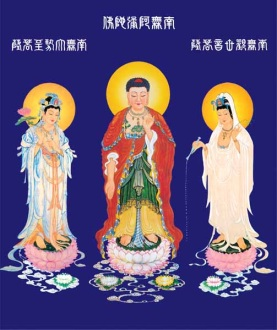
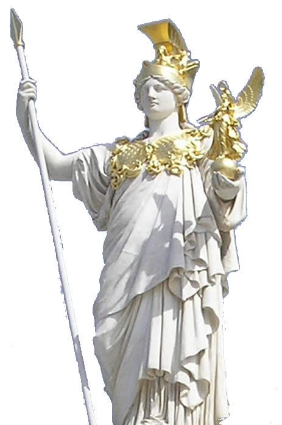

一，大勢至菩萨.......由来
老二妙生即西姆、西洋女王 ，就是著名的希臘女神雅典娜。雅典娜在西洋人裏被稱爲復仇女神，復仇女神名號的來歷，就是史前玄龍一度滅了她門下的白鯨族，雅典娜發誓要復仇，由此得了此名，又稱之為戰爭女神。

在宗教界，她被稱之為西方三聖中的大勢至，為什麼稱之為大勢至？是表示她具足十一級能量威勢極大、勢不可擋、無堅不摧、大勢所至。能摧毀任何天魔地怪。她的金髮女西洋戰團，號稱常勝軍。金髮女戰團，亦稱之為金毛獅子戰團。這個戰團就是宙心大日宮的主力兵團。是一支跨時空界的國際憲兵。
大勢至菩薩即西洋女王修行的方法被後人稱之為淨土法門，在佛教裏極為盛行， 重心是放在對西洋教的教化和修行加持上，若是修行天主、基督等宗教，在修行中要與其保持相應。
雞足山是大勢至菩薩的道場，雞足山原名不叫雞足山，以後改稱為雞足山。雞足山又暗含一個“基督山”名。 光明宮也在九天的西部,稱之為二宮。乾表西洋女王，表大光明，表“西”。表白鯨。
西洋的弓，東洋的劍，那是信物。弓劍相合為滿月，表弦上箭，表回歸。九三年間，一次西洋女王下來談事。金髮飄飄，只穿三點裝。腰間一排小彎刀和一張極小的神弓。
西洋女王的直系後代，維族、哈族等。

西洋女王雅典娜象徵光明，史前點燃的奧侖匹斯山火是大回歸的信號。
喜好：咖啡、紅酒。
九宮神女们在習慣上叫羅地干布為羅地。唯獨西洋女王叫他羅布。以後誤傳說女王叫他羅蔔。
羅地又反叫西洋女王西瓜，女王則叫他笨東瓜，或冬瓜。
| 上 一 頁 | 下 一 頁 | 回 主 頁 |
Email: miduoyuan@126.com